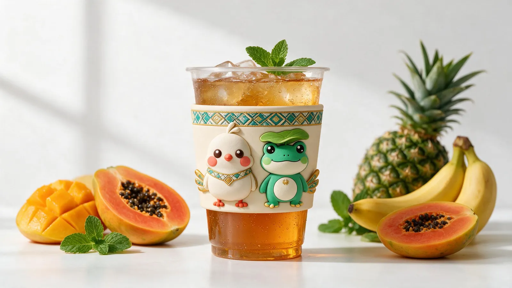
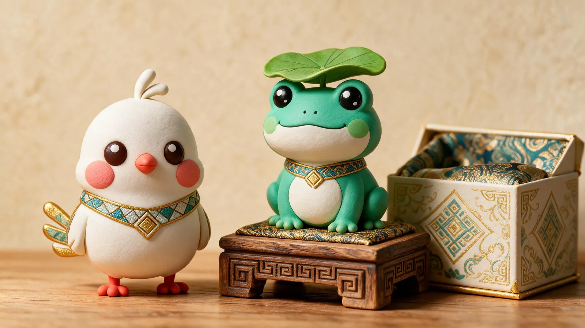

把 IP 捧在手里The IP in your hands
快闪物料Pop-up Merch
一杯茶饮，一只玩偶——甘米米和呱噜噜从屏幕走进日常，成为年轻人愿意打卡、愿意带走的陪伴。A cup of tea, a plush toy — the duo steps out of the screen into daily life, companions people love to carry.


把 IP 捧在手里The IP in your hands
一杯茶饮，一只玩偶——甘米米和呱噜噜从屏幕走进日常，成为年轻人愿意打卡、愿意带走的陪伴。A cup of tea, a plush toy — the duo steps out of the screen into daily life, companions people love to carry.

